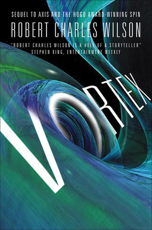

"Vortex"
- Read on 2012-08-31
- Rating: ️️️️️
- Format: 🎧 (10 hours 27 minutes)
This was possibly my favorite book in this trilogy, though it's essential to read the first two to fully enjoy this book. I'm very new to the genre of Science Fiction, but I enjoyed how these books each played with my mind a bit. The first and third books did it the most, and this particular book centered on networked/linked intelligence and thinking, as it influences individual people, societies, a governing force, and even time & distance. I particularly enjoyed the authors use of a dual story line in this book (as well as the changing 1st person narratives).